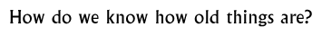

Discussion 11  |
|
Objectives: To encourage children to ask how we are able to tell the difference between ancient and modern objects and artefacts and to discuss what skills and ideas we use to tell the difference.
Materials: Photographs, books and/or illustrations of ancient and modern artefacts, showing a wide variety of materials, both man-made and natural. Alternatively, there could be a box of objects, old and new, showing a wide variety of quality and materials.
Class set-up: Whole group discussion
Vocabulary: ancient, modern, traditional, mass-produce,
Discussion: After the children have had a chance to examine the objects, ask them to divide them into old and new/ancient and modern, perhaps in two columns on the board. Encourage the children to justify their choices, giving reasons why an object is old or new.
What told you that the object was old/new, what clues did you use? All of this can lead to a discussion about the objects that people may have possessed in ancient India. We have many new scientific methods of testing how old an object is, but many experts rely on their 'reading' of the clues in an object, whether they be the types of material common to a particular area, the style or the similarities to other objects of the same type.Show the children two objects from the same place and period or two paintings by the same artist. Can you see any similarities? Why might people think these things are from the same time? Wrap up the discussion by drawing some conclusions from what the children have learnt. If we find an unfamiliar object, how might we decide how old it is? How could we prove it?Background information:
Sir Alexander Cunningham and Sir Mortimer WheelerDiscovery How to decipher an unknown script
© The British Museum |